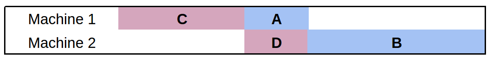
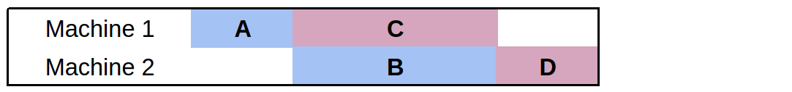

A Flow Shop Scheduler
by Dr. Christian Muise
Dr. Christian Muise is a Research Fellow with the MERS group at MIT’s CSAIL. He is interested in a variety of topics including AI, data-driven projects, mapping, graph theory, and data visualization, as well as celtic music, carving, soccer, and coffee.
A Flow Shop Scheduler
Flow shop scheduling is one of the most challenging and well-studied problems in operations research. Like many challenging optimization problems, finding the best solution is just not possible for problems of a practical size. In this chapter we consider the implementation of a flow shop scheduling solver that uses a technique called local search. Local search allows us to find a solution that is “pretty good” when finding the best solution isn’t possible. The solver will try and find new solutions to the problem for a given amount of time, and finish by returning the best solution found.
The idea behind local search is to improve an existing solution heuristically by considering similar solutions that may be a little better. The solver uses a variety of strategies to (1) try and find similar solutions, and (2) choose one that is promising to explore next. The implementation is written in Python, and has no external requirements. By leveraging some of Python’s lesser-known functionality, the solver dynamically changes its search strategy during the solving process based on which strategies work well.
First, we provide some background material on the flow shop scheduling problem and local search techniques. We then look in detail at the general solver code and the various heuristics and neighbourhood selection strategies that we use. Next we consider the dynamic strategy selection that the solver uses to tie everything together. Finally, we conclude with a summary of the project and some lessons learned through the implementation process.
Background
Flow Shop Scheduling
The flow shop scheduling problem is an optimization problem in which we must determine the processing time for various tasks in a job in order to schedule the tasks to minimize the total time it takes to complete the job. Take, for example, a car manufacturer with an assembly line where each part of the car is completed in sequence on different machines. Different orders may have custom requirements, making the task of painting the body, for example, vary from one car to the next. In our example, each car is a new job and each part for the car is called a task. Every job will have the same sequence of tasks to complete.
The objective in flow shop scheduling is to minimize the total time it takes to process all of the tasks from every job to completion. (Typically, this total time is referred to as the makespan.) This problem has many applications, but is most related to optimizing production facilities.
Every flow shop problem consists of $n$ machines and $m$ jobs. In our car example, there will be $n$ stations to work on the car and $m$ cars to make in total. Each job is made up of exactly $n$ tasks, and we can assume that the $i$-th task of a job must use machine $i$ and requires a predetermined amount of processing time: $p(j,i)$ is the processing time for the $i$th task of job $j$. Further, the order of the tasks for any given job should follow the order of the machines available; for a given job, task $i$ must be completed prior to the start of task $i+1$. In our car example, we wouldn’t want to start painting the car before the frame was assembled. The final restriction is that no two tasks can be processed on a machine simultaneously.
Because the order of tasks within a job is predetermined, a solution to the flow shop scheduling problem can be represented as a permutation of the jobs. The order of jobs processed on a machine will be the same for every machine, and given a permutation, a task for machine $i$ in job $j$ is scheduled to be the latest of the following two possibilities:
-
The completion of the task for machine $i$ in job $j-1$ (i.e., the most recent task on the same machine), or
-
The completion of the task for machine $i-1$ in job $j$ (i.e., the most recent task on the same job)
Because we select the maximum of these two values, idle time for either machine $i$ or job $j$ will be created. It is this idle time that we ultimately want to minimize, as it will push the total makespan to be larger.
Due to the simple form of the problem, any permutation of jobs is a valid solution, and the optimal solution will correspond to some permutation. Thus, we search for improved solutions by changing the permutation of jobs and measuring the corresponding makespan. In what follows, we refer to a permutation of the jobs as a candidate.
Let’s consider a simple example with two jobs and two machines. The first job has tasks $\mathbf{A}$ and $\mathbf{B}$, which take 1 and 2 minutes to complete respectively. The second job has tasks $\mathbf{C}$ and $\mathbf{D}$, which take 2 and 1 minutes to complete respectively. Recall that $\mathbf{A}$ must come before $\mathbf{B}$ and $\mathbf{C}$ must come before $\mathbf{D}$. Because there are two jobs, we have just two permutations to consider. If we order job 2 before job 1, the makespan is 5 (Figure: Flow Shop Example 1); on the other hand, if we order job 1 before job 2, the makespan is only 4 (Figure: Flow Shop Example 2).


Notice that there is no budge room to push any of the tasks earlier. A guiding principle for a good permutation is to minimize the time in which any machine is left without a task to process.Local Search
Local search is a strategy for solving optimization problems when the optimal solution is too hard to compute. Intuitively, it moves from one solution that seems pretty good to another solution that seems even better. Rather than considering every possible solution as a candidate to focus on next, we define what is known as a neighbourhood: the set of solutions considered to be similar to the current solution. Because any permutation of jobs is a valid solution, we can view any mechanism that shuffles the jobs around as a local search procedure (this is in fact what we do below).
To use local search formally, we must answer a few questions:
- What solution should we start with?
- Given a solution, what are the neighbouring solutions that we should consider?
- Given the set of candidate neighbours, which one should we consider moving to next?
The following three sections address these questions in turn.
General Solver
In this section we provide the general framework for the flow shop scheduler. To begin, we have the necessary Python imports and the settings for the solver:
import sys, os, time, random
from functools import partial
from collections import namedtuple
from itertools import product
import neighbourhood as neigh
import heuristics as heur
##############
## Settings ##
##############
TIME_LIMIT = 300.0 # Time (in seconds) to run the solver
TIME_INCREMENT = 13.0 # Time (in seconds) in between heuristic measurements
DEBUG_SWITCH = False # Displays intermediate heuristic info when True
MAX_LNS_NEIGHBOURHOODS = 1000 # Maximum number of neighbours to explore in LNS
There are two settings that should be explained further. The TIME_INCREMENT setting will be used as part of the dynamic strategy selection, and the MAX_LNS_NEIGHBOURHOODS setting will be used as part of the neighbourhood selection strategy. Both are described in more detail below.
These settings could be exposed to the user as command line parameters, but at this stage we instead provide the input data as parameters to the program. The input problem—a problem from the Taillard benchmark set—is assumed to be in a standard format for flow shop scheduling. The following code is used as the __main__ method for the solver file, and calls the appropriate functions based on the number of parameters input to the program:
if __name__ == '__main__':
if len(sys.argv) == 2:
data = parse_problem(sys.argv[1], 0)
elif len(sys.argv) == 3:
data = parse_problem(sys.argv[1], int(sys.argv[2]))
else:
print "\nUsage: python flow.py <Taillard problem file> [<instance number>]\n"
sys.exit(0)
(perm, ms) = solve(data)
print_solution(data, perm)
We will describe the parsing of Taillard problem files shortly. (The files are available online.)
The solve method expects the data variable to be a list of integers containing the activity durations for each job. The solve method starts by initializing a global set of strategies (to be described below). The key is that we use strat_* variables to maintain statistics on each of the strategies. This aids in selecting the strategy dynamically during the solving process.
def solve(data):
"""Solves an instance of the flow shop scheduling problem"""
# We initialize the strategies here to avoid cyclic import issues
initialize_strategies()
global STRATEGIES
# Record the following for each strategy:
# improvements: The amount a solution was improved by this strategy
# time_spent: The amount of time spent on the strategy
# weights: The weights that correspond to how good a strategy is
# usage: The number of times we use a strategy
strat_improvements = {strategy: 0 for strategy in STRATEGIES}
strat_time_spent = {strategy: 0 for strategy in STRATEGIES}
strat_weights = {strategy: 1 for strategy in STRATEGIES}
strat_usage = {strategy: 0 for strategy in STRATEGIES}
One appealing feature of the flow shop scheduling problem is that every permutation is a valid solution, and at least one will have the optimal makespan (though many will have horrible makespans). Thankfully, this allows us to forgo checking that we stay within the space of feasible solutions when going from one permutation to another—everything is feasible!
However, to start a local search in the space of permutations, we must have an initial permutation. To keep things simple, we seed our local search by shuffling the list of jobs randomly:
# Start with a random permutation of the jobs
perm = range(len(data))
random.shuffle(perm)
Next, we initialize the variables that allow us to keep track of the best permutation found so far, as well as the timing information for providing output.
# Keep track of the best solution
best_make = makespan(data, perm)
best_perm = perm
res = best_make
# Maintain statistics and timing for the iterations
iteration = 0
time_limit = time.time() + TIME_LIMIT
time_last_switch = time.time()
time_delta = TIME_LIMIT / 10
checkpoint = time.time() + time_delta
percent_complete = 10
print "\nSolving..."
As this is a local search solver, we simply continue to try and improve solutions as long as the time limit has not been reached. We provide output indicating the progress of the solver and keep track of the number of iterations we have computed:
while time.time() < time_limit:
if time.time() > checkpoint:
print " %d %%" % percent_complete
percent_complete += 10
checkpoint += time_delta
iteration += 1
Below we describe how the strategy is picked, but for now it is sufficient to know that the strategy provides a neighbourhood function and a heuristic function. The former gives us a set of next candidates to consider while the latter chooses the best candidate from the set. From these functions, we have a new permutation (perm) and a new makespan result (res):
# Heuristically choose the best strategy
strategy = pick_strategy(STRATEGIES, strat_weights)
old_val = res
old_time = time.time()
# Use the current strategy's heuristic to pick the next permutation from
# the set of candidates generated by the strategy's neighbourhood
candidates = strategy.neighbourhood(data, perm)
perm = strategy.heuristic(data, candidates)
res = makespan(data, perm)
The code for computing the makespan is quite simple: we can compute it from a permutation by evaluating when the final job completes. We will see below how compile_solution works, but for now it suffices to know that a 2D array is returned and the element at [-1][-1] corresponds to the start time of the final job in the schedule:
def makespan(data, perm):
"""Computes the makespan of the provided solution"""
return compile_solution(data, perm)[-1][-1] + data[perm[-1]][-1]
To help select a strategy, we keep statistics on (1) how much the strategy has improved the solution, (2) how much time the strategy has spent computing information, and (3) how many times the strategy was used. We also update the variables for the best permutation if we stumble upon a better solution:
# Record the statistics on how the strategy did
strat_improvements[strategy] += res - old_val
strat_time_spent[strategy] += time.time() - old_time
strat_usage[strategy] += 1
if res < best_make:
best_make = res
best_perm = perm[:]
At regular intervals, the statistics for strategy use are updated. We removed the associated snippet for readability, and detail the code below. As a final step, once the while loop is complete (i.e., the time limit is reached) we output some statistics about the solving process and return the best permutation along with its makespan:
print " %d %%\n" % percent_complete
print "\nWent through %d iterations." % iteration
print "\n(usage) Strategy:"
results = sorted([(strat_weights[STRATEGIES[i]], i)
for i in range(len(STRATEGIES))], reverse=True)
for (w, i) in results:
print "(%d) \t%s" % (strat_usage[STRATEGIES[i]], STRATEGIES[i].name)
return (best_perm, best_make)
Parsing Problems
As input to the parsing procedure, we provide the file name where the input can be found and the example number that should be used. (Each file contains a number of instances.)
def parse_problem(filename, k=1):
"""Parse the kth instance of a Taillard problem file
The Taillard problem files are a standard benchmark set for the problem
of flow shop scheduling.
print "\nParsing..."
We start the parsing by reading in the file and identifying the line that separates each of the problem instances:
with open(filename, 'r') as f:
# Identify the string that separates instances
problem_line = ('/number of jobs, number of machines, initial seed, '
'upper bound and lower bound :/')
# Strip spaces and newline characters from every line
lines = map(str.strip, f.readlines())
To make locating the correct instance easier, we assume that lines will be separated by a ‘/’ character. This allows us to split the file based on a common string that appears at the top of every instance, and adding a ‘/’ character to the start of the first line allows the string processing below to work correctly regardless of the instance we choose. We also detect when a provided instance number is out of range given the collection of instances found in the file.
# We prep the first line for later
lines[0] = '/' + lines[0]
# We also know '/' does not appear in the files, so we can use it as
# a separator to find the right lines for the kth problem instance
try:
lines = '/'.join(lines).split(problem_line)[k].split('/')[2:]
except IndexError:
max_instances = len('/'.join(lines).split(problem_line)) - 1
print "\nError: Instance must be within 1 and %d\n" % max_instances
sys.exit(0)
We parse the data directly, converting the processing time of each task to an integer and storing it in a list. Finally, we zip the data to invert the rows and columns so that the format respects what is expected by the solving code above. (Every item in data should correspond to a particular job.)
# Split every line based on spaces and convert each item to an int
data = [map(int, line.split()) for line in lines]
# We return the zipped data to rotate the rows and columns, making each
# item in data the durations of tasks for a particular job
return zip(*data)
Compiling Solutions
A solution to the flow shop scheduling problem consists of precise timing for each task in every job. Because we represent a solution implicitly with a permutation of the jobs, we introduce the compile_solution function to convert a permutation to precise times. As input, the function takes in the data for the problem (giving us the duration of every task) and a permutation of jobs.
The function begins by initializing the data structure used to store the starting time for each task, and then including the tasks from the first job in the permutation.
def compile_solution(data, perm):
"""Compiles a scheduling on the machines given a permutation of jobs"""
num_machines = len(data[0])
# Note that using [[]] * m would be incorrect, as it would simply
# copy the same list m times (as opposed to creating m distinct lists).
machine_times = [[] for _ in range(num_machines)]
# Assign the initial job to the machines
machine_times[0].append(0)
for mach in range(1,num_machines):
# Start the next task in the job when the previous finishes
machine_times[mach].append(machine_times[mach-1][0] +
data[perm[0]][mach-1])
We then add all the tasks for the remaining jobs. The first task in a job will always start as soon as the first task in the previous job completes. For the remaining tasks, we schedule the job as early as possible: the maximum out of the completion time of the previous task in the same job and the completion time of the previous task on the same machine.
# Assign the remaining jobs
for i in range(1, len(perm)):
# The first machine never contains any idle time
job = perm[i]
machine_times[0].append(machine_times[0][-1] + data[perm[i-1]][0])
# For the remaining machines, the start time is the max of when the
# previous task in the job completed, or when the current machine
# completes the task for the previous job.
for mach in range(1, num_machines):
machine_times[mach].append(max(
machine_times[mach-1][i] + data[perm[i]][mach-1],
machine_times[mach][i-1] + data[perm[i-1]][mach]))
return machine_times
Printing Solutions
When the solving process is complete, the program outputs information about the solution in a compact form. Rather than providing the precise timing of every task for every job, we output the following pieces of information:
- The permutation of jobs that yielded the best makespan
- The computed makespan of the permutation
- The start time, finish time, and idle time for every machine
- The start time, finish time, and idle time for every job
The start time for a job or machine corresponds to the start of the first task in the job or on the machine. Similarly, the finish time for a job or machine corresponds to the end of the final task in the job or on the machine. The idle time is the amount of slack in between tasks for a particular job or machine. Ideally we would like to reduce the amount of idle time, as it means the overall process time will be reduced as well.
The code to compile the solution (i.e., to compute the start times for every task) has already been discussed, and outputting the permutation and makespan are trivial:
def print_solution(data, perm):
"""Prints statistics on the computed solution"""
sol = compile_solution(data, perm)
print "\nPermutation: %s\n" % str([i+1 for i in perm])
print "Makespan: %d\n" % makespan(data, perm)
Next, we use the string formatting functionality in Python to print the table of start, end, and idle times for each of the machines and jobs. Note that the idle time for a job is the time from when the job started to its completion, minus the sum of the processing times for each task in the job. We compute the idle time for a machine in a similar fashion.
row_format ="{:>15}" * 4
print row_format.format('Machine', 'Start Time', 'Finish Time', 'Idle Time')
for mach in range(len(data[0])):
finish_time = sol[mach][-1] + data[perm[-1]][mach]
idle_time = (finish_time - sol[mach][0]) - sum([job[mach] for job in data])
print row_format.format(mach+1, sol[mach][0], finish_time, idle_time)
results = []
for i in range(len(data)):
finish_time = sol[-1][i] + data[perm[i]][-1]
idle_time = (finish_time - sol[0][i]) - sum([time for time in data[perm[i]]])
results.append((perm[i]+1, sol[0][i], finish_time, idle_time))
print "\n"
print row_format.format('Job', 'Start Time', 'Finish Time', 'Idle Time')
for r in sorted(results):
print row_format.format(*r)
print "\n\nNote: Idle time does not include initial or final wait time.\n"
Neighbourhoods
The idea behind local search is to move locally from one solution to other solutions nearby. We refer to the neighbourhood of a given solution as the other solutions that are local to it. In this section, we detail four potential neighbourhoods, each of increasing complexity.
The first neighbourhood produces a given number of random permutations. This neighbourhood does not even consider the solution that we begin with, and so the term “neighbourhood” stretches the truth. However, including some randomness in the search is good practice, as it promotes exploration of the search space.
def neighbours_random(data, perm, num = 1):
# Returns <num> random job permutations, including the current one
candidates = [perm]
for i in range(num):
candidate = perm[:]
random.shuffle(candidate)
candidates.append(candidate)
return candidates
For the next neighbourhood, we consider swapping any two jobs in the permutation. By using the combinations function from the itertools package, we can easily iterate through every pair of indices and create a new permutation that corresponds to swapping the jobs located at each index. In a sense, this neighbourhood creates permutations that are very similar to the one we began with.
def neighbours_swap(data, perm):
# Returns the permutations corresponding to swapping every pair of jobs
candidates = [perm]
for (i,j) in combinations(range(len(perm)), 2):
candidate = perm[:]
candidate[i], candidate[j] = candidate[j], candidate[i]
candidates.append(candidate)
return candidates
The next neighbourhood we consider uses information specific to the problem at hand. We find the jobs with the most idle time and consider swapping them in every way possible. We take in a value size which is the number of jobs we consider: the size most idle jobs. The first step in the process is to compute the idle time for every job in the permutation:
def neighbours_idle(data, perm, size=4):
# Returns the permutations of the <size> most idle jobs
candidates = [perm]
# Compute the idle time for each job
sol = flow.compile_solution(data, perm)
results = []
for i in range(len(data)):
finish_time = sol[-1][i] + data[perm[i]][-1]
idle_time = (finish_time - sol[0][i]) - sum([t for t in data[perm[i]]])
results.append((idle_time, i))
Next, we compute the list of size jobs that have the most idle time.
# Take the <size> most idle jobs
subset = [job_ind for (idle, job_ind) in reversed(sorted(results))][:size]
Finally, we construct the neighbourhood by considering every permutation of the most idle jobs that we have identified. To find the permutations, we make use of the permutations function from the itertools package.
# Enumerate the permutations of the idle jobs
for ordering in permutations(subset):
candidate = perm[:]
for i in range(len(ordering)):
candidate[subset[i]] = perm[ordering[i]]
candidates.append(candidate)
return candidates
The final neighbourhood that we consider is commonly referred to as Large Neighbourhood Search (LNS). Intuitively, LNS works by considering small subsets of the current permutation in isolation—locating the best permutation of the subset of jobs gives us a single candidate for the LNS neighbourhood. By repeating this process for several (or all) subsets of a particular size, we can increase the number of candidates in the neighbourhood. We limit the number that are considered through the MAX_LNS_NEIGHBOURHOODS parameter, as the number of neighbours can grow quite quickly. The first step in the LNS computation is to compute the random list of job sets that we will consider swapping using the combinations function of the itertools package:
def neighbours_LNS(data, perm, size = 2):
# Returns the Large Neighbourhood Search neighbours
candidates = [perm]
# Bound the number of neighbourhoods in case there are too many jobs
neighbourhoods = list(combinations(range(len(perm)), size))
random.shuffle(neighbourhoods)
Next, we iterate through the subsets to find the best permutation of jobs in each one. We have seen similar code above for iterating through all permutations of the most idle jobs. The key difference here is that we record only the best permutation for the subset, as the larger neighbourhood is constructed by choosing one permutation for each subset of the considered jobs.
for subset in neighbourhoods[:flow.MAX_LNS_NEIGHBOURHOODS]:
# Keep track of the best candidate for each neighbourhood
best_make = flow.makespan(data, perm)
best_perm = perm
# Enumerate every permutation of the selected neighbourhood
for ordering in permutations(subset):
candidate = perm[:]
for i in range(len(ordering)):
candidate[subset[i]] = perm[ordering[i]]
res = flow.makespan(data, candidate)
if res < best_make:
best_make = res
best_perm = candidate
# Record the best candidate as part of the larger neighbourhood
candidates.append(best_perm)
return candidates
If we were to set the size parameter to be equal to the number of jobs, then every permutation would be considered and the best one selected. In practice, however, we need to limit the size of the subset to around 3 or 4; anything larger would cause the neighbours_LNS function to take a prohibitive amount of time.
Heuristics
A heuristic returns a single candidate permutation from a set of provided candidates. The heuristic is also given access to the problem data in order to evaluate which candidate might be preferred.
The first heuristic that we consider is heur_random. This heuristic randomly selects a candidate from the list without evaluating which one might be preferred:
def heur_random(data, candidates):
# Returns a random candidate choice
return random.choice(candidates)
The next heuristic heur_hillclimbing uses the other extreme. Rather than randomly selecting a candidate, it selects the candidate that has the best makespan. Note that the list scores will contain tuples of the form (make,perm) where make is the makespan value for permutation perm. Sorting such a list places the tuple with the best makespan at the start of the list; from this tuple we return the permutation.
def heur_hillclimbing(data, candidates):
# Returns the best candidate in the list
scores = [(flow.makespan(data, perm), perm) for perm in candidates]
return sorted(scores)[0][1]
The final heuristic, heur_random_hillclimbing, combines both the random and hillclimbing heuristics above. When performing local search, you may not always want to choose a random candidate, or even the best one. The heur_random_hillclimbing heuristic returns a “pretty good” solution by choosing the best candidate with probability 0.5, then the second best with probability 0.25, and so on. The while-loop essentially flips a coin at every iteration to see if it should continue increasing the index (with a limit on the size of the list). The final index chosen corresponds to the candidate that the heuristic selects.
def heur_random_hillclimbing(data, candidates):
# Returns a candidate with probability proportional to its rank in sorted quality
scores = [(flow.makespan(data, perm), perm) for perm in candidates]
i = 0
while (random.random() < 0.5) and (i < len(scores) - 1):
i += 1
return sorted(scores)[i][1]
Because makespan is the criteria that we are trying to optimize, hillclimbing will steer the local search process towards solutions with a better makespan. Introducing randomness allows us to explore the neighbourhood instead of going blindly towards the best-looking solution at every step.
Dynamic Strategy Selection
At the heart of the local search for a good permutation is the use of a particular heuristic and neighbourhood function to jump from one solution to another. How do we choose one set of options over another? In practice, it frequently pays off to switch strategies during the search. The dynamic strategy selection that we use will switch between combinations of heuristic and neighbourhood functions to try and shift dynamically to those strategies that work best. For us, a strategy is a particular configuration of heuristic and neighbourhood functions (including their parameter values.)
To begin, our code constructs the range of strategies that we want to consider during solving. In the strategy initialization, we use the partial function from the functools package to partially assign the parameters for each of the neighbourhoods. Additionally, we construct a list of the heuristic functions, and finally we use the product operator to add every combination of neighbourhood and heuristic function as a new strategy.
################
## Strategies ##
#################################################
## A strategy is a particular configuration
## of neighbourhood generator (to compute
## the next set of candidates) and heuristic
## computation (to select the best candidate).
##
STRATEGIES = []
# Using a namedtuple is a little cleaner than using dictionaries.
# E.g., strategy['name'] versus strategy.name
Strategy = namedtuple('Strategy', ['name', 'neighbourhood', 'heuristic'])
def initialize_strategies():
global STRATEGIES
# Define the neighbourhoods (and parameters) that we would like to use
neighbourhoods = [
('Random Permutation', partial(neigh.neighbours_random, num=100)),
('Swapped Pairs', neigh.neighbours_swap),
('Large Neighbourhood Search (2)', partial(neigh.neighbours_LNS, size=2)),
('Large Neighbourhood Search (3)', partial(neigh.neighbours_LNS, size=3)),
('Idle Neighbourhood (3)', partial(neigh.neighbours_idle, size=3)),
('Idle Neighbourhood (4)', partial(neigh.neighbours_idle, size=4)),
('Idle Neighbourhood (5)', partial(neigh.neighbours_idle, size=5))
]
# Define the heuristics that we would like to use
heuristics = [
('Hill Climbing', heur.heur_hillclimbing),
('Random Selection', heur.heur_random),
('Biased Random Selection', heur.heur_random_hillclimbing)
]
# Combine every neighbourhood and heuristic strategy
for (n, h) in product(neighbourhoods, heuristics):
STRATEGIES.append(Strategy("%s / %s" % (n[0], h[0]), n[1], h[1]))
Once the strategies are defined, we do not necessarily want to stick with a single option during search. Instead, we select randomly any one of the strategies, but weight the selection based on how well the strategy has performed. We describe the weighting below, but for the pick_strategy function, we need only a list of strategies and a corresponding list of relative weights (any number will do). To select a random strategy with the given weights, we pick a number uniformly between 0 and the sum of all weights. Subsequently, we find the lowest index $i$ such that the sum of all of the weights for indices smaller than $i$ is greater than the random number that we have chosen. This technique, sometimes referred to as roulette wheel selection, will randomly pick a strategy for us and give a greater chance to those strategies with higher weight.
def pick_strategy(strategies, weights):
# Picks a random strategy based on its weight: roulette wheel selection
# Rather than selecting a strategy entirely at random, we bias the
# random selection towards strategies that have worked well in the
# past (according to the weight value).
total = sum([weights[strategy] for strategy in strategies])
pick = random.uniform(0, total)
count = weights[strategies[0]]
i = 0
while pick > count:
count += weights[strategies[i+1]]
i += 1
return strategies[i]
What remains is to describe how the weights are augmented during the search for a solution. This occurs in the main while loop of the solver at regularly timed intervals (defined with the TIME_INCREMENT variable):
# At regular intervals, switch the weighting on the strategies available.
# This way, the search can dynamically shift towards strategies that have
# proven more effective recently.
if time.time() > time_last_switch + TIME_INCREMENT:
time_last_switch = time.time()
Recall that strat_improvements stores the sum of all improvements that a strategy has made while strat_time_spent stores the time that the strategy has been given during the last interval. We normalize the improvements made by the total time spent for each strategy to get a metric of how well each strategy has performed in the last interval. Because a strategy may not have had a chance to run at all, we choose a small amount of time as a default value.
# Normalize the improvements made by the time it takes to make them
results = sorted([
(float(strat_improvements[s]) / max(0.001, strat_time_spent[s]), s)
for s in STRATEGIES])
Now that we have a ranking of how well each strategy has performed, we add $k$ to the weight of the best strategy (assuming we had $k$ strategies), $k-1$ to the next best strategy, etc. Each strategy will have its weight increased, and the worst strategy in the list will see an increase of only 1.
# Boost the weight for the successful strategies
for i in range(len(STRATEGIES)):
strat_weights[results[i][1]] += len(STRATEGIES) - i
As an extra measure, we artificially bump up all of the strategies that were not used. This is done so that we do not forget about a strategy entirely. While one strategy may appear to perform badly in the beginning, later in the search it can prove quite useful.
# Additionally boost the unused strategies to avoid starvation
if results[i][0] == 0:
strat_weights[results[i][1]] += len(STRATEGIES)
Finally, we output some information about the strategy ranking (if the DEBUG_SWITCH flag is set), and we reset the strat_improvements and strat_time_spent variables for the next interval.
if DEBUG_SWITCH:
print "\nComputing another switch..."
print "Best: %s (%d)" % (results[0][1].name, results[0][0])
print "Worst: %s (%d)" % (results[-1][1].name, results[-1][0])
print results
print sorted([strat_weights[STRATEGIES[i]]
for i in range(len(STRATEGIES))])
strat_improvements = {strategy: 0 for strategy in STRATEGIES}
strat_time_spent = {strategy: 0 for strategy in STRATEGIES}
Discussion
In this chapter we have seen what can be accomplished with a relatively small amount of code to solve the complex optimization problem of flow shop scheduling. Finding the best solution to a large optimization problem such as the flow shop can be difficult. In a case like this, we can turn to approximation techniques such as local search to compute a solution that is good enough. With local search we can move from one solution to another, aiming to find one of good quality.
The general intuition behind local search can be applied to a wide range of problems. We focused on (1) generating a neighbourhood of related solutions to a problem from one candidate solution, and (2) establishing ways to evaluate and compare solutions. With these two components in hand, we can use the local search paradigm to find a valuable solution when the best option is simply too difficult to compute.
Rather than using any one strategy to solve the problem, we saw how a strategy can be chosen dynamically to shift during the solving process. This simple and powerful technique gives the program the ability to mix and match partial strategies for the problem at hand, and it also means that the developer does not have to hand-tailor the strategy.